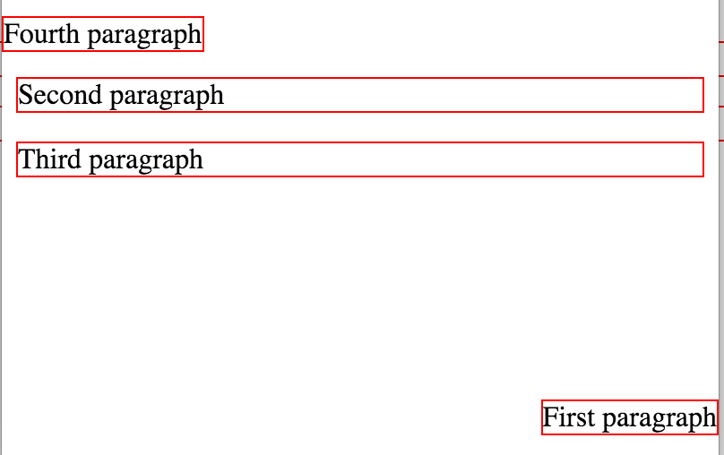
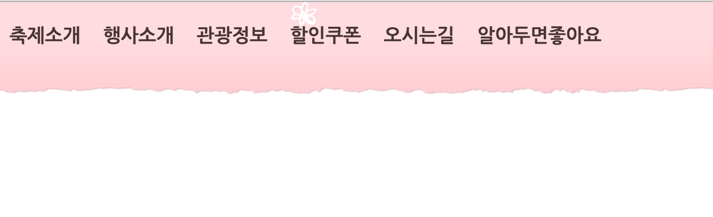

Answer: We can make web page by using HTML and use linkes to navigate through different pages, CSS decides how HTML file is presented in a web browser.
Answer : Cascading means cascade. CSS are set up so that you can have many properties all affection the same element. Some of those properties may conflict with one another. then browser dicided those properties like cascade.
- List three different methods to use CSS with a HTML document and write a brief decription how to use it(5 point)
- For the three different methods discussed at the previous problem, describe pros and cons (advantage and disadvantages) of them comparing with others(10 point)
- When we want to set font style using CSS, we can set generic family and font family. What are the difference between them?(5 point) Which one is recommended to state as a last option to show in a web-page? (5 point)
- When we want to control space of an element, we can use padding and margin. What are the difference between them?(5 point)
- When we set font size using CSS, we can use units of em, %, px. How are they different? (5 point)
- There are four ways to set conditional property for a sequence of elements (parent-child, siblings) - we called it as Combinator in the class. Describe the name of the four combinators with brief descripton and give a short example (10 point)
Answer: 1. External : An external style sheet file is created with an extention of .css and referenced within head.
2. Internal : Inserted within header style tag
3. Inline : A style can be added for a single element within a start tag
2. Internal : Inserted within header style tag
3. Inline : A style can be added for a single element within a start tag
Answer:
External pros : Share a CSS file across different HTML pages.
External cons : In order to import style information for each document, an extra download is needed.
Internal pros : One style of same element
Internal cons : If same style applies to multiple HTML documents, the style has to be copied
Inline pros : Good for test Inline cons : it has to be applied for every element
External pros : Share a CSS file across different HTML pages.
External cons : In order to import style information for each document, an extra download is needed.
Internal pros : One style of same element
Internal cons : If same style applies to multiple HTML documents, the style has to be copied
Inline pros : Good for test Inline cons : it has to be applied for every element
Answer: generic family is a set of fonts with similar look. font-family is specific fonts. / generic fonts
Answer: padding allows to specify the space between border and the content in an element / margin allows to specify the space outside of the given element.
Answer:
em : default font size of a browser(generally 16px)
% : ratio from the default size
px : fixed-units that are used in screen media.(1 px is equal to one dot on the computer screen)
em : default font size of a browser(generally 16px)
% : ratio from the default size
px : fixed-units that are used in screen media.(1 px is equal to one dot on the computer screen)
Answer :
Descendant selector : the style applies only to parent-child relation in the document
Child selector : Applies to only immediate children
Adjacent sibling : Applies to elements that are only adjacent sibling element
General sibling : Applies to all other sibling element
Child selector : Applies to only immediate children
Adjacent sibling : Applies to elements that are only adjacent sibling element
General sibling : Applies to all other sibling element
Kookmin-Univercity
Kookmin-Univercity
Kookmin-Univercity
Kookmin-Univercity
Kookmin-Univercity
Kookmin-Univercity
Kookmin-Univercity
Kookmin-Univercity
Kookmin-Univercity
Kookmin-Univercity
Kookmin-Univercity
Kookmin-Univercity
New divKookmin-Univercity
Kookmin-Univercity
Kookmin-Univercity
Kookmin-Univercity
Kookmin-Univercity
Kookmin-Univercity
Kookmin-Univercity
Kookmin-Univercity
Make an aesthetic web page using CSS
- Open border-shorthand.html and fill the border-single class to have the second div element to have the same effect with the first div element. You can use only one element in the border-single CSS class. (2 point)
- Open last-paragraph.html and fill in the style tag to make only the last paragraph (the third one) to have the following effects(5 point)
- Make the font color as red
- Make the font to be bold
- Make the font size larger (xx-large)
- Set the font as Arial and its corresponding generic family
- Make all the characters to UPPERCASE
- Using position.html file, add style elements to make the paragraphs shown like below. (8 points)

Hints- For the first and fourth paragraph, you have to use fixed position
- For the second paragraph, you have to specify margin to avoid overlapping with the top most paragraph
- Using table.html file, modify the table to be shown like below. You must follow the rules below.(15 point)

- Specific color, font, border style does not matter unless it is specifically mentioned below
- Create an external css file (file name: table.css) and link it in the table.html
- The table header elements have to be left aligned
- The td elements have to be center aligned
- When a mouse pointer is over a row, it has to change color including the table header row (green, ...)
- Make every 2nd line (line number 2, 4, 6, 8, 10, ...) to have darker color
- You do not need to set the background-color for td and th elements. If you do so, making hover to change color will be harder as the solution is not covered in the class
- Recommends to try various colors - Color Link
-
Create following navigation bar using navigation-bar.html with the following rules
- For the navigation bar background, you have to use
nav-bar-bg.png
file - For the navigation bar, you have to set the width as 100% and the height as 140px
- The fonts size of characters is 20px, the color is #483535, and the font is Nanum Gothic
- When the mouse point is over the link, it should show only one
hover-icon.png
file in a default location(left top) - you don't have to worry about making it same as the original site

- For the navigation bar background, you have to use